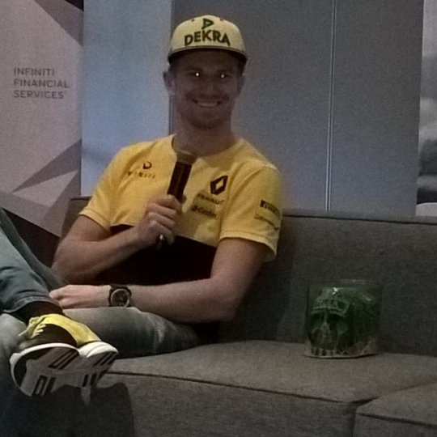
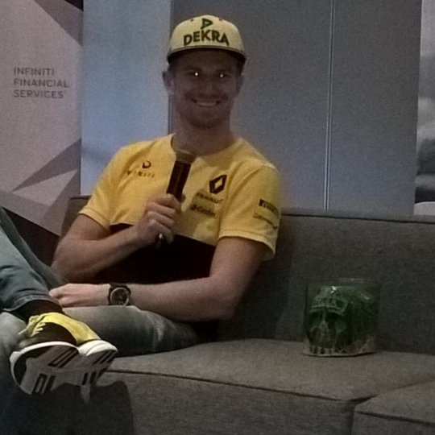

Nicolas Hülkenberg
- Team: Haas
- Land: Deutschland
- Geburtsort: Emmerich am Rhein, Deutschland
- Geburtsdatum: 19.08.1987
- Alter: 37
- Verheiratet
- Kinder: 1 Tochter
- Podien: 0
- Grands Prix gefahren: 227
- Weltmeisterschaften: 0
- Team: Haas
- Fahrernummer: 27
Er ist der Superheld mit dem Talent zum Rennsport-Superstar – wenn er nur bei einem Top-Team die Muskeln spielen lassen könnte. Der "Hulk" der Formel 1 hat in seiner Karriere, die bis ins Jahr 2010 zurückreicht, als Mittelfeld-Marodeur für Williams, Force India, Sauber, Renault, Racing Point, Aston Martin und Haas unglaubliche Stärke und Ausdauer bewiesen. In dieser Rookie-Saison meisterte Hülkenberg die wechselnden Streckenbedingungen und holte sich in Brasilien eine brillante Pole-Position, wobei er bewies, dass er sowohl Köpfchen als auch Muskelkraft hat. Seither hat ihn seine Fähigkeit, konstant die Punkte aufzusaugen, zu einem sehr geschätzten Teamplayer gemacht. 2015 wuchs sein Ruf noch einmal, als er an einem Wochenende außerhalb seines Hauptberufs auf Anhieb den Klassiker der 24 Stunden von Le Mans für Porsche gewann. Hülkenbergs Alter Ego abseits der Rennstrecke ist bodenständig – er ist ein Fahrer, der seinen eigenen Regenschirm hält, wenn es auf dem Weg zur Startaufstellung regnet – mit einem frechen Sinn für Humor. Als er den ungewollten Rekord der meisten Rennstarts ohne Podiumsplatz aufstellte, lachte er darüber hinaus als den Beginn der "Hülkenberg-Ära". Glücklicherweise ging die Ära des beliebten Deutschen auch nach seiner Absetzung durch Renault Ende 2019 mit einigen Ersatzfahrten in den Jahren 2020 und 2022 weiter, und nachdem er mit Haas in die Formel 1 zurückgekehrt war, hat der "Hulk" eine weitere Chance ergriffen, die Dinge richtig zu stellen.
 
